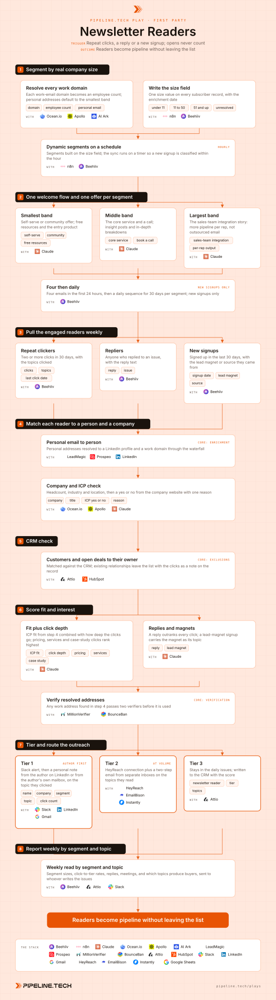

Newsletter Readers
Install the Pipeline.tech "Newsletter Readers" outbound play. Fetch https://raw.githubusercontent.com/pipeline-tech/plays/main/core/SKILL.md and https://raw.githubusercontent.com/pipeline-tech/plays/main/plays/newsletter-readers/SKILL.md, save them as ~/.claude/skills/pipeline-outbound-core/SKILL.md and ~/.claude/skills/pipeline-newsletter-readers/SKILL.md, then run /pipeline-newsletter-readers.

A newsletter list is the warmest list a company owns and usually the least worked, because everyone is afraid of burning it. The readers who click twice, reply or just arrived are already a pipeline source; the question is how to reach them without turning the list into a cold campaign. Segment by real company size, give each segment its own offer, and let the author start the conversation instead of a cold inbox.
Load pipeline-outbound-core first. Where a step says "apply core", follow that section of the core skill.
Inputs
Ask for these before step 1, and save them to ./pipeline-plays.config.json:
- The ICP in one paragraph: industries, headcount band, geography, the problem you solve, who owns it.
- The newsletter platform, the author whose name is on the issues, and the author's own mailbox and LinkedIn profile.
- Stack answers from core section 1, plus the size bands if they exist (default: under 11, 11 to 50, 51 and up).
- One offer per size band in one sentence each, and the lead magnets currently live.
Steps
1Segment by real company size
- Export every subscriber and resolve each work-email domain to an employee count with Ocean.io or Apollo, AI Ark when the list is large. Self-reported headcount is unreliable, so the domain is the source of truth.
- Personal addresses are allowed for a plain signup and default to the smallest band. Unresolved work domains default there too, flagged for a retry.
- Write one size field on every subscriber and build three dynamic segments on it: under 11, 11 to 50, 51 and up. Add a fourth above 500 only once the third band is large enough to split.
- Run the sync as a scheduled script or an n8n flow every 15 minutes, so a new signup is classified within the hour and lands in the right welcome flow.
2One welcome flow and one offer per segment
- Write a distinct welcome flow per band with Claude. The smallest band hears the self-serve or community offer, since a done-for-you service will not fit. The middle band hears the core service and is asked for a call. The largest band hears how the offer plugs into an existing sales team, framed as output per rep.
- Four emails in the first 24 hours, then a daily email for 30 days, each segment on its own track.
- Only new signups are enrolled. Existing subscribers are classified for targeting but never dropped into a welcome flow they did not sign up for.
3Pull the engaged readers weekly
- Every week, pull three groups: readers who clicked two or more times in 30 days with the topics clicked, readers who replied to an issue, and readers who signed up in the last 30 days with the lead magnet or source they came from.
- Opens never count. Open tracking is noise from mail clients and privacy proxies; a click is a choice.
- One row per reader in a working sheet with segment, group, topics and dates.
4Match each reader to a person and a company
- Work emails already carry a domain. Personal addresses go through the waterfall to find the LinkedIn profile and current employer. A personal address with no company match stays a reader and leaves this list.
- Enrich the company: headcount, industry, location, and a yes or no ICP verdict from a cheap model reading the website, with one reason. Record the title.
5CRM check
- Match every reader against the CRM. Customers and open deals go to their owner with the clicked topics as a note; a customer reading the pricing page is an expansion conversation, not a cold one.
- Apply core: exclusions. Anyone in an active sequence or recently not interested stays a reader only.
6Score fit and interest
- Score ICP fit and interest with Claude. Interest is click depth, with pricing, services and case-study clicks at the top and educational clicks below. A reply sits above everything. A new signup inherits the lead magnet as its topic.
- Any work address resolved in step 4 goes through core: verification before it is used.
7Tier and route the outreach
- Tier 1: ICP fit plus a reply or buying-topic clicks. Slack alert with the topics and a one-line opener. The author sends a personal note on LinkedIn or from their own mailbox: thanks for reading, the topic they clicked keeps coming up with teams like theirs, how are they handling it. Never from the newsletter sender address.
- Tier 2: ICP fit with educational clicks or a lead-magnet signup. HeyReach connection and a two-step email from inboxes separate from the newsletter, on the topics they read. Apply core: copy and send rules.
- Tier 3: acceptable fit. No outreach; the daily issues continue.
- Every reader stays subscribed whatever the tier. Write every contacted person to the CRM with play name, segment, tier, topics and date.
8Report weekly by segment and topic
- Weekly: segment sizes, readers pulled, click-to-tier rates, Tier 1 notes sent, replies, meetings, pipeline, split by segment and topic. The topic column tells the author which subjects produce buyers.
- Send the read to whoever writes the issues so next week's content follows the topics that convert.
- Apply core: credits and handoff.
Guardrails
- Opens never count. Clicks, replies and signups do.
- Size comes from the domain, never from a self-reported field. A form headcount is a hint at best.
- No reader is ever unsubscribed, moved or removed from the daily issues because they received outreach. The list is the asset; the outreach is a layer on top.
- The first touch comes from the author or a human, never from the newsletter sender address.
- Existing subscribers never get a welcome flow. Classification applies to everyone; enrollment applies to new signups only.
- One person is contacted at most once per 60 days across all first-party plays. A reader who also hit the website is one signal, not two emails.
Example run
User: "/pipeline-newsletter-readers for our outbound agency, B2B SaaS and agencies 11 to 500 people in the US, a 4,200-subscriber daily newsletter written by the founder"
- Asked for the author's mailbox and profile, the three offers and the live lead magnets; confirmed the stack.
- 4,200 subscribers: 2,960 work emails resolved to 1,870 domains, 1,240 personal addresses defaulted to the smallest band. Segments: 1,980 under 11, 1,410 at 11 to 50, 810 at 51 and up.
- Three welcome flows approved, 34 emails each, enrollment on for new signups only. 61 new signups in week one, all classified within the hour.
- Weekly pull: 312 readers clicked twice or more, 19 replied, 118 signed up in 30 days; 449 rows after dedupe.
- 214 personal addresses matched to a profile and a work domain, 98 left as readers. 196 of 351 companies ICP fit.
- 23 customers and 9 open deals routed to their owners with notes; 14 removed as in sequence or not interested.
- 150 scored: 31 Tier 1 (12 replies, 19 pricing or case-study clickers), 72 Tier 2, 47 Tier 3. 106 addresses verified, 4 catch-all in their own campaign.
- 31 founder notes sent, 9 replies, 5 calls booked in week one. 72 Tier 2 connections and a two-step email loaded from separate inboxes. Top converting topics: pricing, inbox infrastructure, list building.